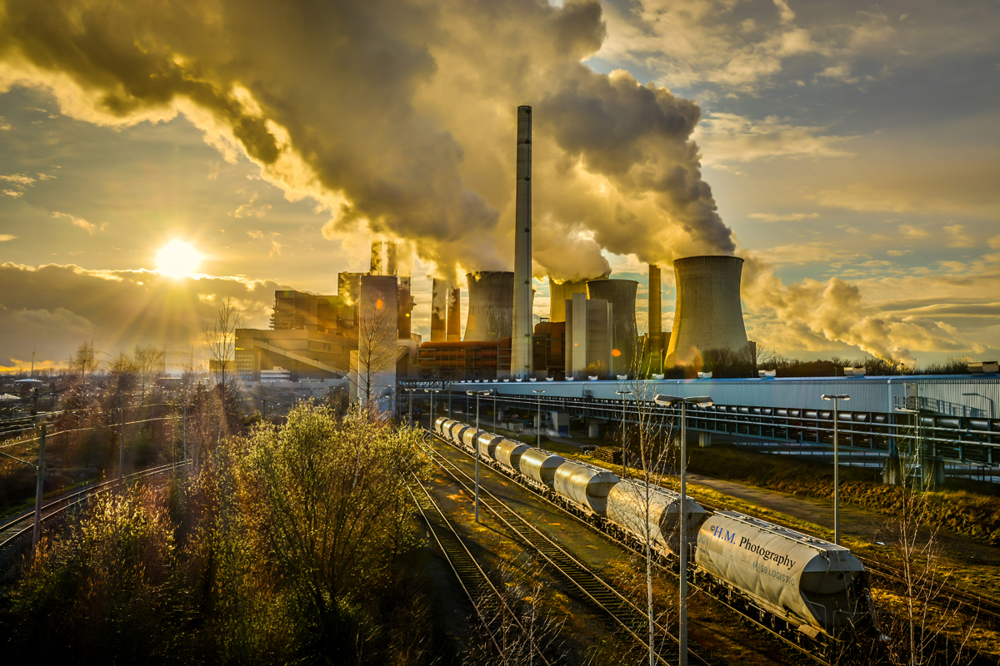

Historie & Vergangenheit des Kraftwerks
Geschichte des alten KernKraftWerk
Projekt Start und Baujahr
- Projekt Start: 1970
- Baujahr: 1970 - 1976
Übergabe
1. Dezember 1976 erfolgte die Übergabe an den Betreiber.
Ausbau
- 1971 wurden die Planungen geändert und die Leistung auf 840 MW
- Block II wurde im Juni 1975 von der Betreibergesellschaft beantragt.
- Im Jahre 1982 war Baubeginn für Block II, am 29. Dezember 1988 wurde die erste Kritikalität
erreicht und am 13. April 1989 wurde das Kraftwerk der Betreibergesellschaft übergeben
Moderniesierung
Höhe und Ausführung des Kühlturmes wurden – auch aus Gründen des Landschaftsbildes – mehrfach geändert: erst auf 100, dann auf 80 und zuletzt auf 56 Meter und in Ausführung als Hybridkühlturm. Diese Ausführungsvariante aus dem Jahre 1981 wurde letztendlich auch realisiert. Im Jahre 1982 war Baubeginn für Block II, am 29. Dezember 1988 wurde die erste Kritikalität erreicht und am 13. April 1989 wurde das Kraftwerk der Betreibergesellschaft übergeben.
Rückbau
- Stilllegung GKN I: 2017
- GKN II: 15. April 2023
- Stillgelegte Reaktoren (Brutto)2 (2240 MW)
Zwischenfälle
Zu einem kleineren Vorfall, das Reaktorschutzsystem aktivierte einen Notspeisewasser-Dieselgenerator im Reserve-Stromnetz. Aufgrund eines falsch angeschlossenen Steckers schaltete sich der Dieselmotor jedoch ab, was eine standardmäßige Meldung an die Behörden auslöste. Der Vorfall ereignete sich während einer Routineinspektion eines Notdieselaggregats. Die Kühlpumpe des Dieselmotors fiel wegen einer defekten elektrischen Verbindung aus, die nur für den Test erforderlich war. Dadurch schaltete sich der Motor automatisch ab. Trotz des Problems standen weitere Notdieselaggregate zur Verfügung, um die Beckenkühlung aufrechtzuerhalten, sodass die sicherheitstechnische Bedeutung des Vorfalls als sehr gering einzustufen ist.
| Jahr | Ausbau | Moderniesierung | Zwischenfälle |
|---|---|---|---|
| 1971 | Leistung auf 840 MW | Planung geändert und Leistung erhöht | 0 |
| 1975 | Block II | Übergabe an die Betreibergesellschaft | 0 |
| 1982 | Ausbau Block II | Baubeginn für Block II | 0 |
| 2017 | Stilllegung GKN 1 | Rückbau GKN1 | 0 |
| 2023 | Stilllegung GKN 2 | Rückbau GKN2 | 0 |
